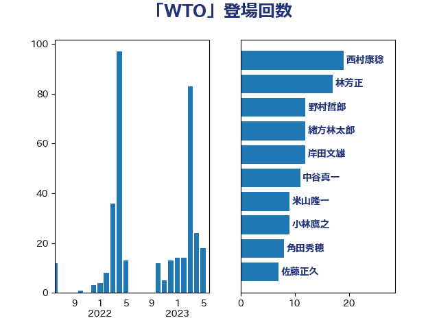

単語「WTO」

| 茂木敏充 | 自由民主党 | 64 回 |
| 浅田均 | 日本維新の会 | 16 回 |
| 中根一幸 | 自由民主党 | 13 回 |
| 大塚耕平 | 国民民主党 | 13 回 |
| 梶山弘志 | 自由民主党 | 13 回 |
| 齋藤健 | 自由民主党 | 12 回 |
| 緒方林太郎 | 無所属 | 10 回 |
| 小林鷹之 | 自由民主党 | 9 回 |
| 林芳正 | 自由民主党 | 9 回 |
| 角田秀穂 | 公明党 | 8 回 |
| 小熊慎司 | 立憲民主党 | 7 回 |
| 岸田文雄 | 自由民主党 | 7 回 |
| 柴田巧 | 日本維新の会 | 6 回 |
| 鈴木俊一 | 自由民主党 | 6 回 |
| 鷲尾英一郎 | 自由民主党 | 6 回 |
| 緑川貴士 | 立憲民主党 | 5 回 |
| 菅義偉 | 自由民主党 | 5 回 |
| 萩生田光一 | 自由民主党 | 5 回 |
| 青木愛 | 立憲民主党 | 5 回 |
| 篠原孝 | 立憲民主党 | 4 回 |
| 紙智子 | 日本共産党 | 4 回 |
| 赤羽一嘉 | 公明党 | 4 回 |
| 音喜多駿 | 日本維新の会 | 4 回 |
| 三宅伸吾 | 自由民主党 | 3 回 |
| 古賀之士 | 立憲民主党 | 3 回 |
| 大家敏志 | 自由民主党 | 3 回 |
| 浦野靖人 | 日本維新の会 | 3 回 |
| 熊谷裕人 | 立憲民主党 | 3 回 |
| 玉木雄一郎 | 国民民主党 | 3 回 |
| 田村貴昭 | 日本共産党 | 3 回 |
| 足立康史 | 日本維新の会 | 3 回 |
| 近藤和也 | 立憲民主党 | 3 回 |
| 野上浩太郎 | 自由民主党 | 3 回 |
| 青山大人 | 立憲民主党 | 3 回 |
| 井上哲士 | 日本共産党 | 2 回 |
| 伊波洋一 | 無所属 | 2 回 |
| 八木哲也 | 自由民主党 | 2 回 |
| 城井崇 | 立憲民主党 | 2 回 |
| 小田原潔 | 自由民主党 | 2 回 |
| 山本博司 | 公明党 | 2 回 |
| 山際大志郎 | 自由民主党 | 2 回 |
| 本田太郎 | 自由民主党 | 2 回 |
| 森山浩行 | 立憲民主党 | 2 回 |
| 江島潔 | 自由民主党 | 2 回 |
| 浅野哲 | 国民民主党 | 2 回 |
| 船橋利実 | 自由民主党 | 2 回 |
| 長坂康正 | 自由民主党 | 2 回 |
| 高木かおり | 日本維新の会 | 2 回 |
| 三浦信祐 | 公明党 | 1 回 |
| 中山展宏 | 自由民主党 | 1 回 |
| 中野洋昌 | 公明党 | 1 回 |
| 串田誠一 | 日本維新の会 | 1 回 |
| 井上英孝 | 日本維新の会 | 1 回 |
| 伊藤信太郎 | 自由民主党 | 1 回 |
| 前原誠司 | 国民民主党 | 1 回 |
| 吉良州司 | 無所属 | 1 回 |
| 塩村あやか | 立憲民主党 | 1 回 |
| 大島敦 | 立憲民主党 | 1 回 |
| 大西英男 | 自由民主党 | 1 回 |
| 小野田紀美 | 自由民主党 | 1 回 |
| 山岸一生 | 立憲民主党 | 1 回 |
| 山田太郎 | 自由民主党 | 1 回 |
| 山田宏 | 自由民主党 | 1 回 |
| 山谷えり子 | 自由民主党 | 1 回 |
| 岡本三成 | 公明党 | 1 回 |
| 岡田克也 | 立憲民主党 | 1 回 |
| 平井卓也 | 自由民主党 | 1 回 |
| 平口洋 | 自由民主党 | 1 回 |
| 平将明 | 自由民主党 | 1 回 |
| 東徹 | 日本維新の会 | 1 回 |
| 森屋隆 | 立憲民主党 | 1 回 |
| 武田良太 | 自由民主党 | 1 回 |
| 河野義博 | 公明党 | 1 回 |
| 清水真人 | 自由民主党 | 1 回 |
| 渡辺周 | 立憲民主党 | 1 回 |
| 滝波宏文 | 自由民主党 | 1 回 |
| 熊野正士 | 公明党 | 1 回 |
| 片山さつき | 自由民主党 | 1 回 |
| 牧原秀樹 | 自由民主党 | 1 回 |
| 田名部匡代 | 立憲民主党 | 1 回 |
| 矢倉克夫 | 公明党 | 1 回 |
| 稲津久 | 公明党 | 1 回 |
| 細田健一 | 自由民主党 | 1 回 |
| 舟山康江 | 国民民主党 | 1 回 |
| 藤巻健太 | 日本維新の会 | 1 回 |
| 赤嶺政賢 | 日本共産党 | 1 回 |
| 重徳和彦 | 立憲民主党 | 1 回 |
| 鈴木敦 | 国民民主党 | 1 回 |
| 阿部知子 | 立憲民主党 | 1 回 |
| 青柳仁士 | 日本維新の会 | 1 回 |
| 黄川田仁志 | 自由民主党 | 1 回 |